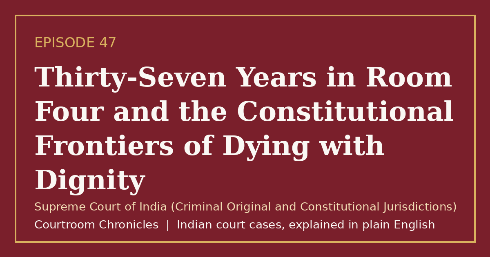

Episode 47
Thirty-Seven Years in Room Four and the Constitutional Frontiers of Dying with Dignity
A historic constitutional judgment recognized passive euthanasia and affirmed that the fundamental right to life embraces a dignified death.
Constitutional lawFundamental rightsCriminal lawNatural justicePrivacy
#CourtroomChronicles#IndianLaw#RightToLife#MedicalEthics#Bioethics#ConstitutionalLaw#SupremeCourtOfIndia

Listen
- Court
- Supreme Court of India (Criminal Original and Constitutional Jurisdictions)
- Date of Decision
- March 7, 2011
- Medical Condition
- Permanent vegetative state resulting from irreversible hypoxic-ischemic brain damage
- Duration of Hospital Care
- Over thirty-seven continuous years of bedridden institutional care without a single bedsore
- Legal Question
- Whether life support and artificial nutrition may be withdrawn from an incompetent patient under passive euthanasia
Key takeaways
- Passive euthanasia is constitutionally recognized in India, enabling the humane withdrawal of futile life-support systems.
- Withdrawal of artificial life-sustaining treatment requires strict clearance from a High Court bench and specialized medical boards.
- Lifelong institutional caregivers hold primary legal status as next friends over outside parties seeking to determine patient welfare.
The case in brief
Following a brutal sexual assault and strangulation in a public hospital basement, a dedicated staff nurse suffered catastrophic cerebral hypoxia that extinguished her cognitive faculties while leaving her autonomic brainstem intact. For nearly four decades, her fellow hospital nurses transformed a small hospital room into a sanctuary of continuous care, attending to her bodily needs with extraordinary devotion so that she never developed a single bedsore or systemic infection.
A social activist and author filed a public interest writ petition before the Supreme Court claiming to act as the patient's next friend, seeking judicial permission to withdraw artificial hydration and feeding to bring an end to her prolonged vegetative existence. The hospital nursing staff fiercely opposed the petition, asserting that the patient was not in unbearable pain, reacted to voices and music, and had become an adopted member of their institutional family.
The Supreme Court dismissed the plea to terminate life-sustaining measures, holding that the hospital staff who cared for the patient constituted her true next friend under the protective doctrine of the state. However, the bench made historic constitutional law by legalizing passive euthanasia across the nation, laying down stringent procedural safeguards requiring High Court approval and independent medical panels before life-support systems can be lawfully withdrawn from terminally ill patients.
Timeline
- Tragic Assault
A hospital ward nurse suffers irreversible brain damage following a brutal assault and asphyxiation in a medical basement.
- Public Interest Petition
A writer and activist petitions the Supreme Court seeking permission to withdraw life-sustaining measures.
- Medical Panel Report
A court-appointed board of specialists submits a clinical evaluation confirming permanent vegetative condition without acute suffering.
- Historic Euthanasia Ruling
The Supreme Court legalizes passive euthanasia with judicial safeguards but rejects the petition to stop feeding the nurse.
- Living Wills Recognized
A five-judge Constitution Bench reaffirms passive euthanasia and recognizes advance medical directives.
What the court decided
Writ petition dismissed regarding the specific patient; passive euthanasia recognized as legally permissible in India subject to strict High Court approval procedures and multi-disciplinary medical board evaluations.
Key holdings
- Active euthanasia involving the administration of lethal substances remains unlawful and constitutes culpable homicide or murder.
- Passive euthanasia involving the withdrawal of life-sustaining treatment or artificial hydration from a permanently vegetative patient is legally permissible.
- The ultimate decision to withdraw life support requires formal approval from the relevant High Court exercising constitutional parens patriae authority.
- Hospital nursing staff who provided lifelong daily care, rather than external petitioners, qualify as the patient's genuine next friend.
Legal principles
Doctrine of Parens Patriae
The state and the courts hold an inherent paternal duty to protect the legal rights and well-being of citizens unable to care for themselves.
In this case: The court held that judges must exercise ultimate supervisory jurisdiction to ensure that decisions to withdraw life support reflect the patient's best interests.
Distinction Between Active and Passive Euthanasia
Active euthanasia entails taking positive physical steps to end life, whereas passive euthanasia consists of withholding artificial measures to let nature take its course.
In this case: The bench held that while positive acts causing death are penal offenses, allowing a dying patient to die naturally when recovery is impossible is lawful.
Right to Die with Dignity as Facet of Life
The constitutional right to life under Article 21 encompasses living and dying with human dignity rather than enduring prolonged, futile bodily degradation.
In this case: The court ruled that keeping a hopelessly vegetative body artificially animated against nature violates the intrinsic dignity protected by the Constitution.
The law then and now
The constitutional review evaluated the boundaries of life and death under Article 21 and the Indian Penal Code, 1860. Modern statutory developments under the Mental Healthcare Act, 2017 and the Bharatiya Sanhitas have transformed the penal treatment of suicide and medical decision-making.
Left: the law applied to this case. Right: the matching provision today (the new criminal codes apply only to offences on or after 1 July 2024).
- Bharatiya Nyaya Sanhita, 2023Section 226Attempt to commit suicide to compel or restrain exercise of lawful power
Decriminalized general suicide attempts, restricting penal liability exclusively to attempts made to coerce public servants from performing duties.
Re-enacted penal provisions punishing any individual who aids or instigates another person to commit suicide.
Re-enacted comprehensive penal sanctions punishing deliberate physical assaults endangering human life. See all 2 episodes on this provision →